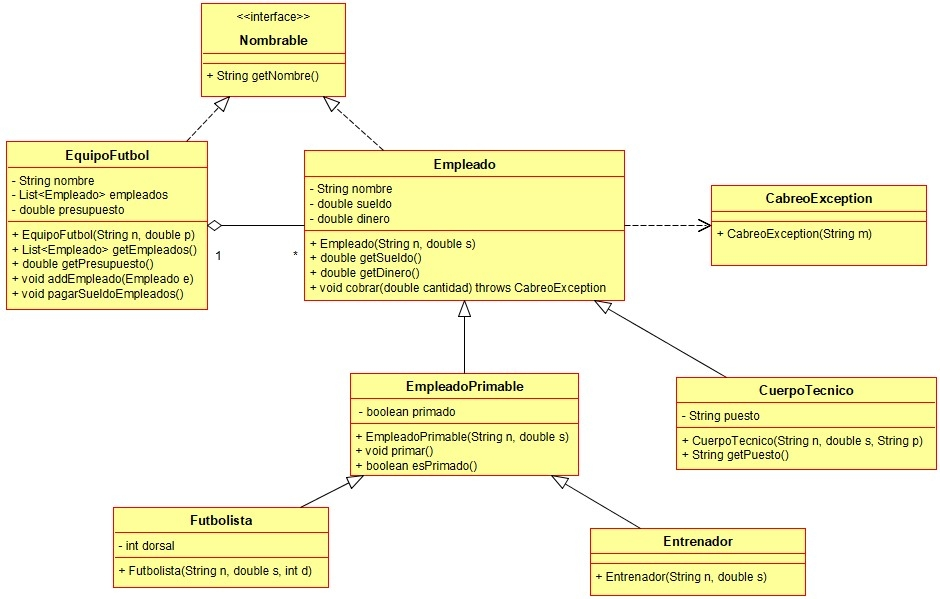

Ejercicio 12 : Siguiendo el diagrama de clases del ejercicio anterior, programa las clases EmpleadoPrimable, Futbolista y Entrenador.

-
EmpleadoPrimable: Clase que representa un empleado al que se le puede ofrecer una prima por buen rendimiento. Por defecto, ningún empleado está primado.
-
primar: método que prima al empleado.
-
esPrimado: método que devuelve true si el empleado ha sido primado.
-
Futbolista: Tipo de empleado primable que tiene un dorsal en el equipo.
-
Entrenador: Otro tipo de empleado primable.